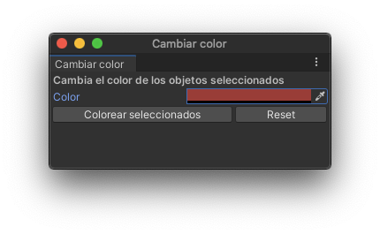
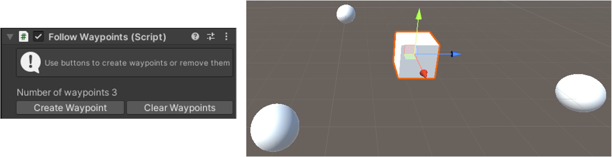
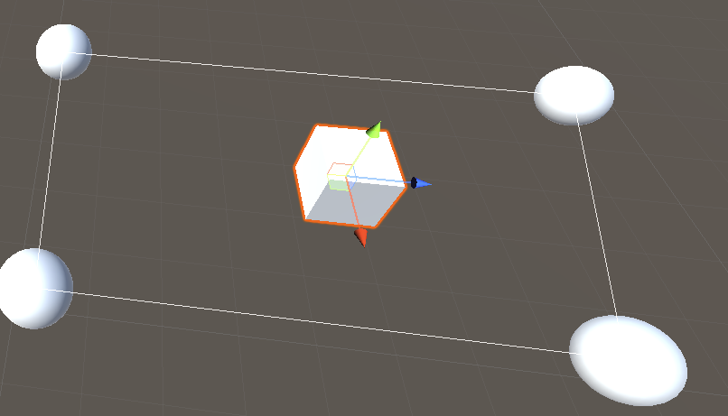

C# en Unity se utiliza principalmente para:
La primera ya la hemos usado bastante.
Veamos, por tanto, como modificar el editor con C#.
Editor dentro de la carpeta Assets de
UnityMonoBahaviour sino que usan otras clases de Unity como
Editor o EditorWindowUnityEditorusing UnityEditor;
GUI y de
GUILayout
(y
EditorGUILayout,
en algunos casos)Sirve para crear nuevas ventanas para incorporarlas al editor de Unity.
Estas nuevas ventanas nos permitirán hacer funciones adicionales que no están definidas en el editor de Unity.
EditorWindowOnGUI
con IMGUI.
Figura 1: Ventana de la herramienta para colorear objetos
using UnityEngine;
using UnityEditor;
public class ColorizerWindow : EditorWindow {
Color selectedColor;
// Creamos una opción de menú para mostrar la ventana
[MenuItem("Window/Colorizer")]
public static void ShowWindow() {
// Mostramos la ventana
GetWindow<ColorizerWindow>("Cambiar color");
}
...
...
void OnGUI() {
// Etiqueta de la ventana
GUILayout.Label("Cambia el color de los objetos seleccionados", EditorStyles.boldLabel);
// Selector de color
selectedColor = EditorGUILayout.ColorField("Color", selectedColor);
...
...
// Layout horizontal
GUILayout.BeginHorizontal();
// Primer botón
if (GUILayout.Button("Colorear seleccionados")) {
// Selection nos da acceso a los objetos seleccionados
foreach (GameObject obj in Selection.gameObjects) {
Renderer selectedRenderer = obj.GetComponent<Renderer>();
if (selectedRenderer != null) {
// OJO: esto crea una nueva instancia del material
// Si usamos sharedMaterial cambiamos el compartido por
// todos los objetos
selectedRenderer.material.color = selectedColor;
}
}
}
...
...
// Creamos el botón de Reset
if (GUILayout.Button("Reset")) {
foreach (GameObject obj in Selection.gameObjects) {
Renderer selectedRenderer = obj.GetComponent<Renderer>();
if (selectedRenderer != null) {
// OJO: esto crea una nueva instancia del material
// Si usamos sharedMaterial cambiamos el compartido por
// todos los objetos
selectedRenderer.material.color = Color.white;
}
}
}
// Dejamos de usar el layout horizontal
GUILayout.EndHorizontal();
} // OnGUI
}
Sirve para crear paneles de edición de componentes (inspectors) personalizados con el fin de facilitar y acelerar el desarrollo de gameplay.
[CustomEditor(typeof(MI_MONOBEHAVIOUR))]EditorOnInspectorGUI
con IMGUI (incluyendo elementos del
EditorGUILayout)target
da acceso al componenteserializedObject
da acceso al componente serializado de modo que se pueda utilizar
las operaciones de Undo y la actualización de los Prefabs
Figura 2: Panel para la creación de Waypoints
public class FollowWaypoints : MonoBehaviour {
public List<GameObject> waypoints;
void Awake() {
waypoints = new List<GameObject>();
}
}
using UnityEngine;
using UnityEditor;
[CustomEditor(typeof(FollowWaypoints))]
public class FollowWaypointsEditor : Editor
{
private FollowWaypoints theTarget;
private void OnEnable()
{
// Referencia al componente
theTarget = target as FollowWaypoints;
}
...
...
public override void OnInspectorGUI() {
// Comenzar con base.OnInspectorGUI() si queremos
// mantener la info por defecto del inspector
EditorGUILayout.HelpBox("Use buttons to create waypoints or remove them",
MessageType.Info);
EditorGUILayout.Space();
// Etiqueta
EditorGUILayout.LabelField("Number of waypoints: ",
theTarget.waypoints.Count.ToString());
// Layout horizontal
GUILayout.BeginHorizontal();
// Comportamiento del botón para crear waypoints
if (GUILayout.Button("Create Waypoint")) {
GameObject sphere = GameObject.CreatePrimitive(PrimitiveType.Sphere);
theTarget.waypoints.Add(sphere);
}
}
...
...
// Comportamiento del botón de borrado de waypoints
if (GUILayout.Button("Clear Waypoints"))
{
foreach (GameObject item in theTarget.waypoints)
{
GameObject.DestroyImmediate(item);
}
theTarget.waypoints.Clear();
}
// Fin del layout horizontal
GUILayout.EndHorizontal();
} // OnInspectorGUI
}
Unity permite mostrar elementos en la escena que nos ayuden a la hora de definir un componente desde el inspector.
[CustomEditor(typeof(MI_MONOBEHAVIOUR))]EditorOnSceneGUI
con IMGUI (incluyendo elementos del
EditorGUILayout)Handles
para dibujar elementos en la escenatarget
da acceso al componenteserializedObject
da acceso al componente serializado de modo que se pueda utilizar
las operaciones de Undo y la actualización de los Prefabs
FollowWaypoints

Igual que en el ejemplo anterior…
using UnityEngine;
using UnityEditor;
[CustomEditor(typeof(FollowWaypoints))]
public class FollowWaypointsEditor : Editor {
...
...
// Dibuja una línea entre los puntos de la ruta
void OnSceneGUI() {
// Dibujamos si tenemos al menos dos waypoints
if ( theTarget == null
|| theTarget.waypoints == null
|| theTarget.waypoints.Count <=1 )
return;
// Seleccionamos el primer punto de ruta
Vector3 first = theTarget.waypoints[0].transform.position;
Vector3 current = first;
...
...
// Iteramos entre el resto de puntos de ruta...
for (int i = 1; i < theTarget.waypoints.Count; i++) {
// ... y dibujamos una línea entre ellos
if (theTarget.waypoints[i] != null)
{
Handles.DrawLine(
current,
theTarget.waypoints[i].transform.position
);
current = theTarget.waypoints[i].transform.position;
}
}
// Dibujamos la línea que cierra la ruta
Handles.DrawLine(current, first);
} // OnSceneGUI
}